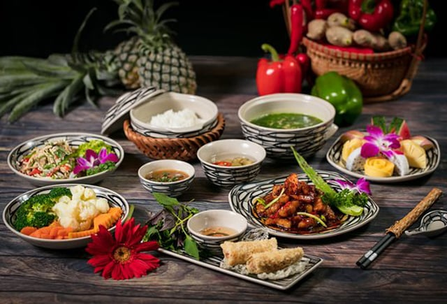

Explore the rich flavors of Vietnamese cuisine with these traditional recipes.
Discover the essence of Vietnamese cooking through these beloved dishes, each with its unique story and flavor profile. From the spicy and aromatic Bún Bò Huế to the comforting Canh Chua and the savory Thịt Kho Hột Vịt, these recipes offer a glimpse into the heart of Vietnamese culinary traditions.
Whether you're a seasoned cook or a beginner, these recipes are designed to be approachable and rewarding, allowing you to bring a taste of Vietnam into your kitchen. Enjoy the process of cooking and savor the delightful results with family and friends.
Happy cooking!